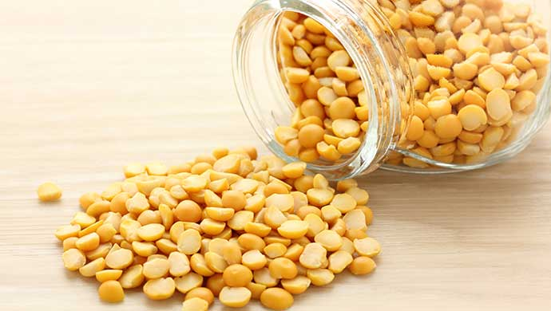
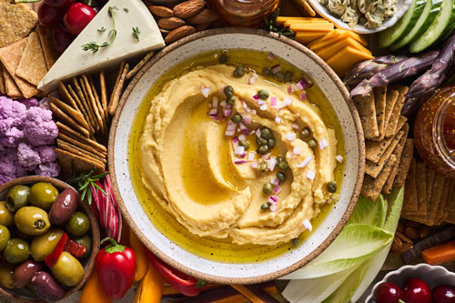

Get ready for a journey through the enchanting world of fava peas! These little green dynamos, often known as fava beans or broad beans, are like the hidden treasures of the legume kingdom, and today, we're going to uncover why they're the coolest peas in the pod! 🌱💚
Hold onto your chef's hat because fava peas are about to take your taste buds on a nutritional adventure! These green gems are bursting with the good stuff – protein, fiber, folate, manganese, and potassium. They're like the ultimate plant-powered protein boost, making them a superstar for every plate. 🌿🍽️
Fava peas are more than just peas; they're the earth's own champions. Not only do they stand tall (literally), but they also have a secret eco-power – nitrogen fixation! That means they give the soil a nitrogen boost, making the planet smile. Plus, they're the superheroes of drought resistance, so they're here to save the day. 🦸♂️🦸♀️
When it comes to the kitchen, fava peas are your besties. They're game for anything – from soups to spreads, salads to stews, and so much more. With their mild, slightly nutty flavor, they're always up for a culinary adventure. 🍲🥗
Fava peas have been gracing tables for centuries, like the wise old wizards of the pea world. They've added a dash of history and culture to countless dishes, making them a staple in the culinary timeline. 📜🍽️
Ever wished your peas were more than just peas? Fava peas are your dream come true! When mashed or puréed, they transform into a creamy sensation that takes your dips and spreads to a whole new level of deliciousness. They're all about that delightful, melt-in-your-mouth texture. 🍨👌